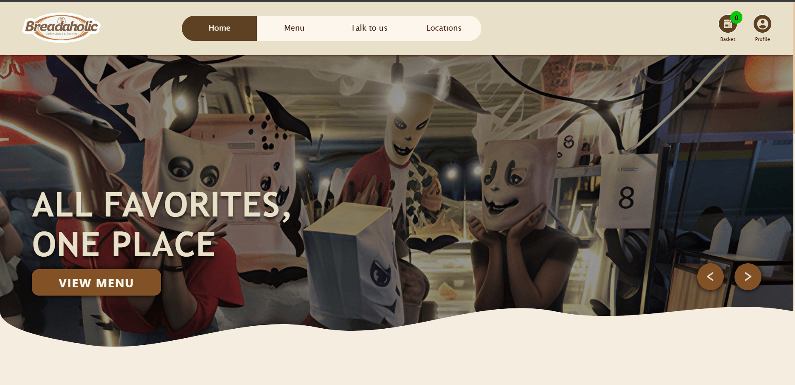
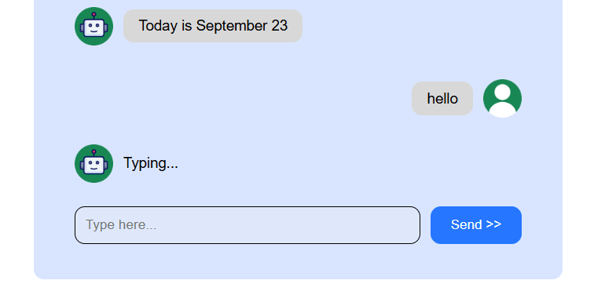
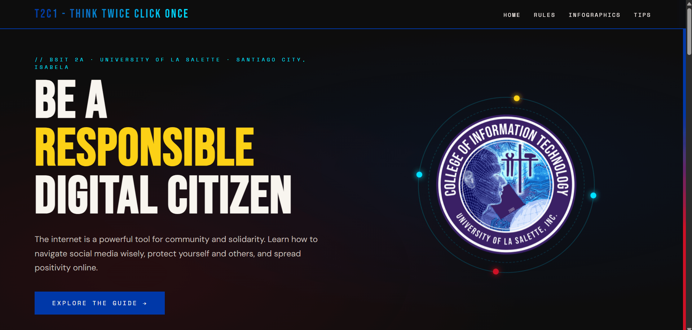
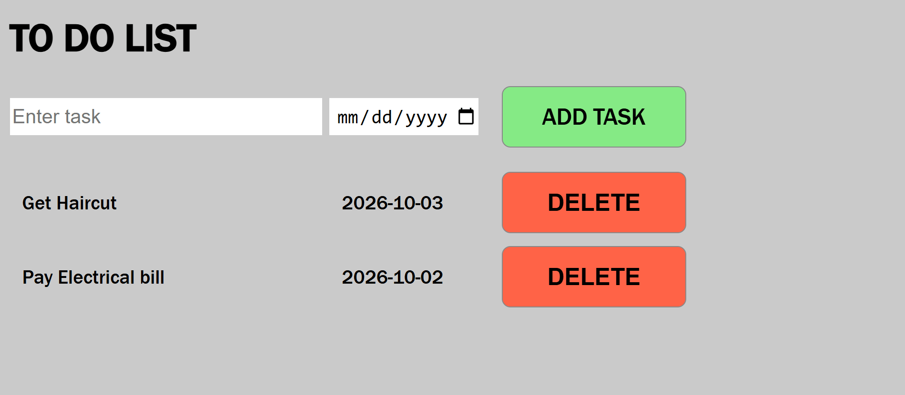
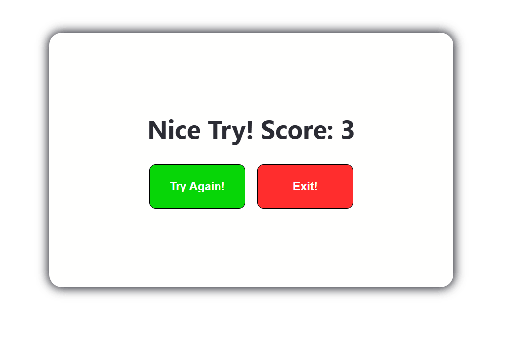
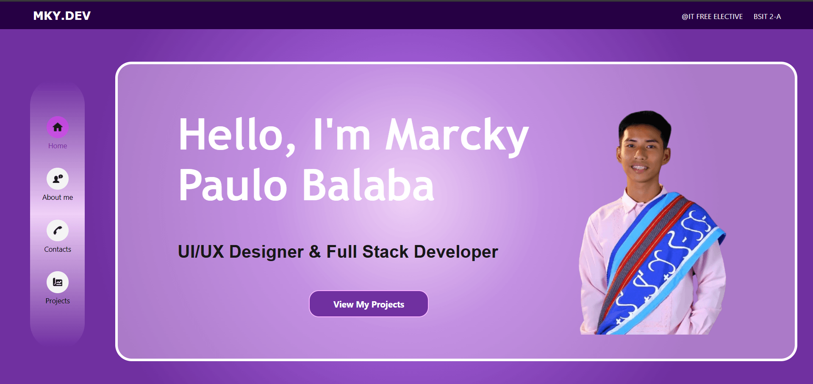

Web Development
Breadaholic Web App
A full-stack online bakery platform allowing users to browse menus, manage order baskets, and explore bakery locations seamlessly.

Explore innovative software applications, interactive digital experiences, and web systems developed by College of Information Technology students.

A full-stack online bakery platform allowing users to browse menus, manage order baskets, and explore bakery locations seamlessly.

An intuitive messaging interface providing real-time automated responses, dynamic typing indicators, and seamless conversation history handling.

An educational web portal providing interactive guides, infographics, and tips to foster safe and responsible online media engagement.

A productivity application designed to simplify daily task tracking with date scheduling and real-time task management features.

An engaging quiz platform enabling users to test their knowledge across diverse subjects including Computer Science and History.

A modern, responsive personal website showcasing full-stack development projects, UI/UX designs, and technical capabilities.